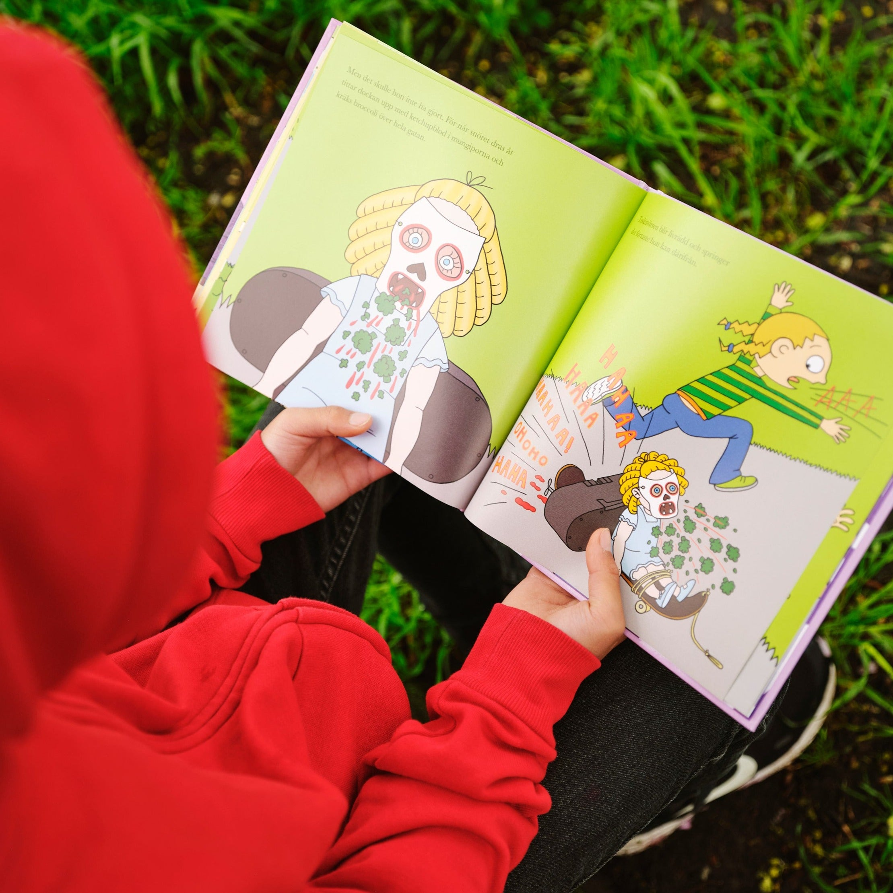

UppfinnarJohanna och skrämselmaskinen
Ann-Christine Magnusson & Lovisa Lesse
En docka, broccoli och ett platsskelett – vad kan det bli?! Åh! Johanna blir så arg! Vadå för liten för att vara med? Johanna bestämmer sig för att uppfinna en skrämselmaskin. En maskin som ska få tyst på alla taskmörtar och “du får inte va’ med-typer”.
Till Butik >